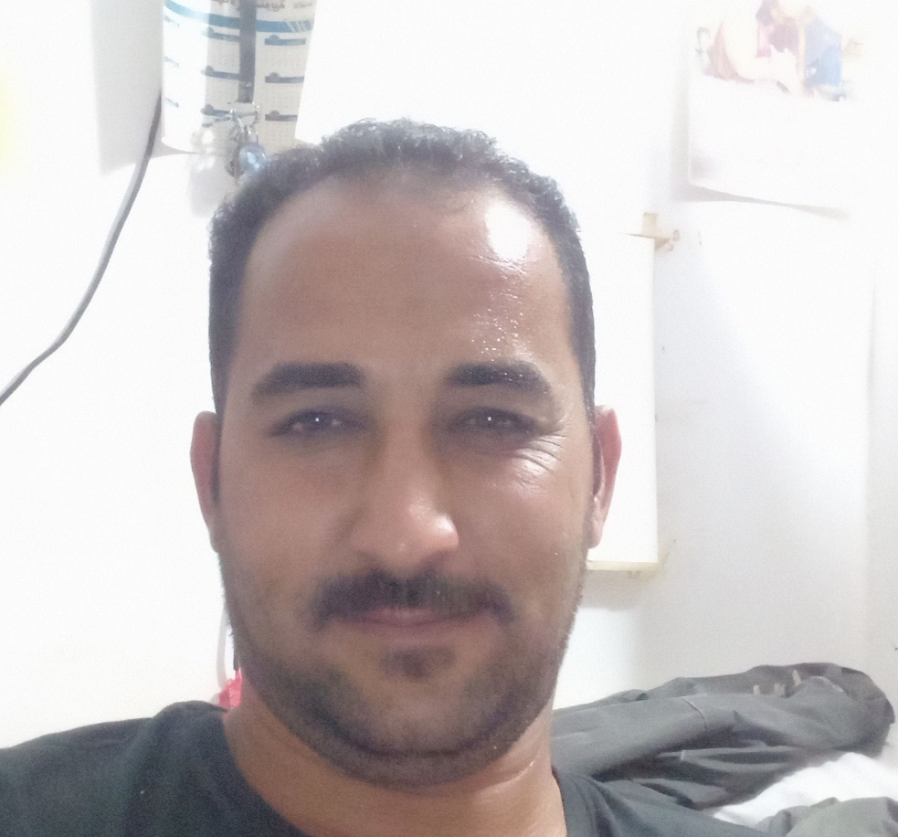
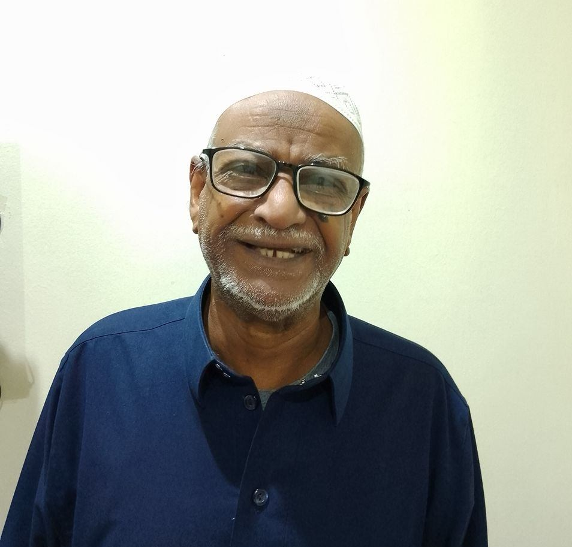
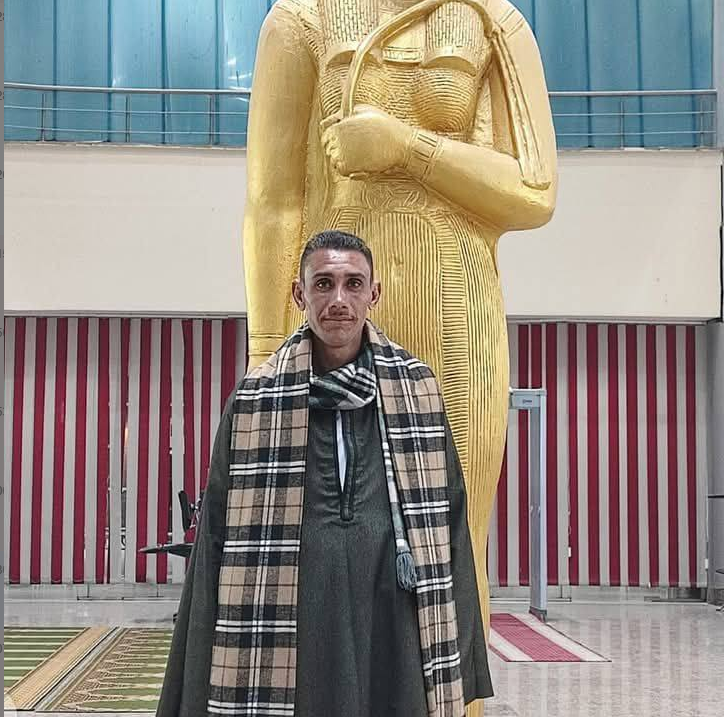

الحبوب الزرقاء تعالج العرض فقط — وتتركك بصداع وضربات قلب. د. سارة تُعالج السبب الحقيقي: تدفق الدم المحدود، انخفاض أكسيد النيتريك، أو ضعف في الأعصاب المحيطية. النتيجة: انتصاب قوي وطبيعي — من داخلك.
في 80% من الحالات التي أعالجها، الانتصاب الضعف ليس "قدراً" — بل خلل يمكن إصلاحه طبيعياً:
الانتصاب يبدأ بالدم. عندما تضيق الشرايين (بسبب السكري، التدخين، أو قلة الحركة) — لا يصل دم كافٍ. نُوسّع الأوعية طبيعياً بمستخلصات نباتية تُحفز أكسيد النيتريك.
الدماغ يرسل إشارة → الأعصاب تنقلها → العضلات تسترخي → الدم يتدفق. إن تعطلت أي حلقة في هذه السلسلة، الانتصاب يضعف. نُصلحها بالمغنيسيوم، B12، ومحفزات النمو العصبي الطبيعية.
هرمون الذكورة ينخفض 1% سنوياً بعد الـ30. لكن قلة النوم والتوتر والسكري تُسرّع الانخفاض إلى 3%. النتيجة: انتصاب ضعيف + رغبة منخفضة + طاقة معدومة.
يُسبب تلفاً عصبياً (neuropathy) ويضيّق الأوعية. نضيف مستخلصات الميتفورمين النباتية وSGLT2 لتحسين حساسية الإنسولين — ما يُحسّن تدفق الدم والأعصاب معاً.
أدوية ضغط الدم تُسبب ضعف جنسي في 40% من الرجال. نستخدم الarginine الطبيعي والبطيخ البري لتوسيع الأوعية دون التأثير على الضغط.
الكورتيزول المرتفع يُدمّر التستوستيرون. نضيف الأشواغاندا والروديولا لتخفيض الكورتيزول وتحسين المزاج — ما يُعيد الرغبة والانتصاب طبيعياً.
أسألك عن: حالة الانتصاب الصباحي، مدة الانتصاب، الأمراض المصاحبة، الأدوية، نمط حياتك. هذا يُحدد أي "حلقة" معطلة.
مستخلصات تُحفز أكسيد النيتريك + مكملات عصبية + محفزات تستوستيرون طبيعية. كلها طبيعية 100% ومعتمدة FDA.
أراقب تحسّن انتصابك عبر ماسنجر. نزيد الجرعة، نُضيف مكملات، أو نُغيّر الاستراتيجية — حتى نصل للنتيجة.
بعد إصلاح الأوعية والأعصاب والهرمونات، الجسم يحافظ على التوازن الجديد. لا حاجة لحبوب يومية مدى الحياة.
"بعد الخمسين حسبت إن الانتصاب الضعيف شيء طبيعي. د. سارة قالت لا — العمر يحتاج رعاية مختلفة. شخّصت نقص حاد في التستوستيرون. البرنامج الطبيعي رجّع لي الانتصاب الصباحي بعد ٦ سنوات غياب. والآن أتحكم ٢٠ دقيقة."

"الانتصاب كان يضعف نص الطريق. زوجتي تسألني ش فيك؟ وأنا ما أدري أجاوب. د. سارة فحصت حالتي وقالت عندي تضيّق في الشرايين الصغيرة. أعطتني تركيبة فيها Citrulline وArginine. بعد ١٤ يوم الانتصاب صار قوي وثابت."

"عمري ٧٣ وقلت خلاص انتهت رجولتي. بس د. سارة قالت الجسم يستجيب في أي عمر. البرنامج المخصص لعمري أعطاني نتيجة ما توقعتها. الانتصاب رجع بعد ٣ أسابيع. الحين أتحكم ١٥ دقيقة. زوجتي فرحانة والحمد لله."

"عندي سكري من ١٠ سنوات والانتصاب كان يضعف تدريجياً. طبيبي قال هذا طبيعي. د. سارة قالت لا، يمكن إصلاحه. أضافت VEGF وFGF للتركيبة. بعد ٢٠ يوم الانتصاب رجع قوي. بعد ٤٠ يوم صرت أتحكم ٢٢ دقيقة."
الفياجرا ونظائرها تعالج العرض فقط: تُوسّع الأوعية مؤقتاً. لكنها لا تُصلح الأعصاب، ولا تُعيد التستوستيرون، ولا تُحسّن تدفق الدم الدائم. مع الوقت تحتاج جرعات أعلى — والآثار الجانبية (صداع، ضغط عيني، ضربات قلب) تزداد. برنامج د. سارة يُصلح السبب، فلا حاجة للحبوب.
لا. عالجت رجالاً بأعمار 55+ و60+ بنجاح. العمر يُبطئ الاستجابة قليلاً (30–45 يوم بدلاً من 20) لكن النتيجة تكون ممتازة. الجسم يستجيب للعلاج الطبيعي في أي عمر.
نعم. التركيبة الطبيعية لا تتعارض مع الأدوية الكيميائية. بل في بعض الحالات (مثل السكري) نضيف مكونات تُحسّن الحالة الأساسية أيضاً.
نعم — لأننا نُصلح البنية التحتية (أوعية دموية + أعصاب + هرمونات). بعد إكمال البرنامج، الجسم يحافظ على التوازن الجديد. أغلب المرضى يبقون بصحة جيدة 6–12 شهراً بدون منتجات.
ثلاثة أسباب: ١) د. سارة طبيبة من نظام جونز هوبكنز معتمدة. ٢) الدفع عند الاستلام — تستلم المنتج أولاً. ٣) ضمان 90 يوم كامل: إن لم تحصل على نتيجة، نُعيد لك المال.
كلتا الباقتين تشملان ضمان استرداد كامل 90 يوماً. لا مخاطرة. لا أسئلة.
غير متأكد أي برنامج يناسبك؟ تحدث مع د. سارة مباشرة عبر ماسنجر — تشخيص مجاني وسرية تامة.
📋 تشخيص مجاني خلال 60 ثانية